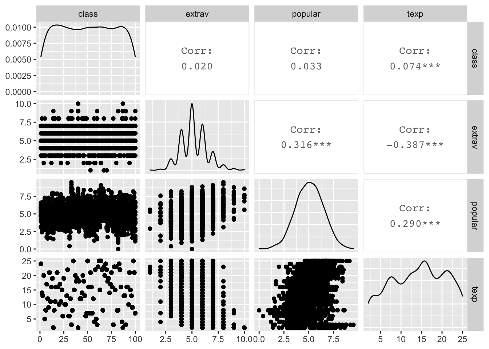
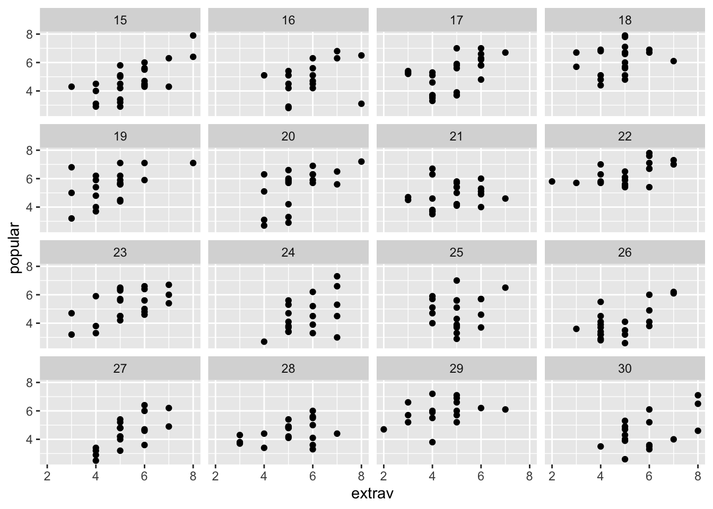
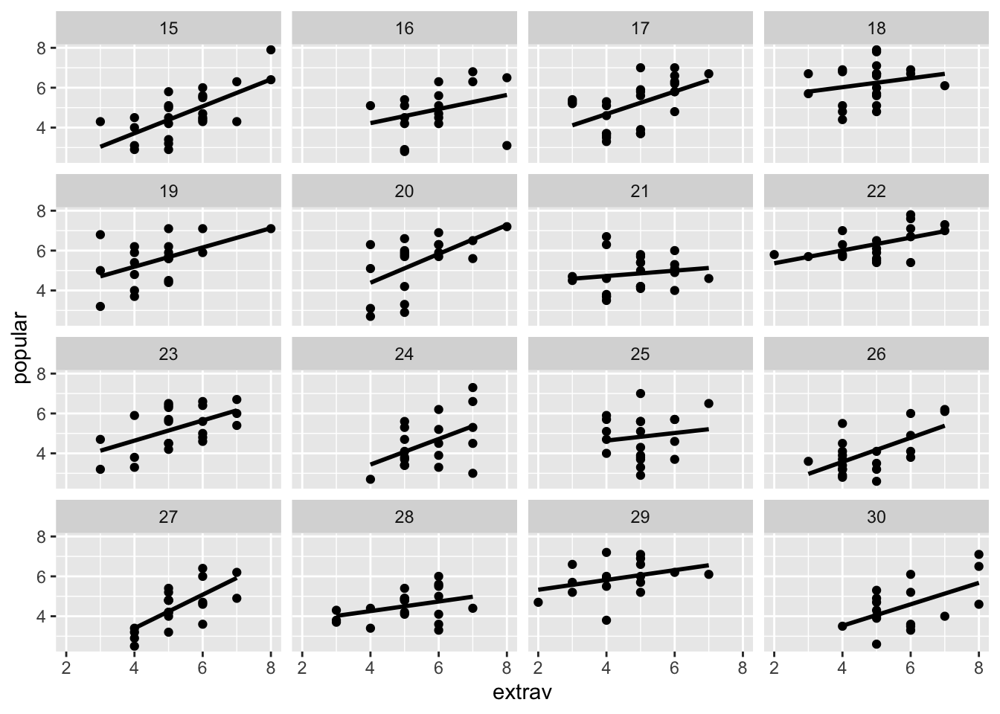
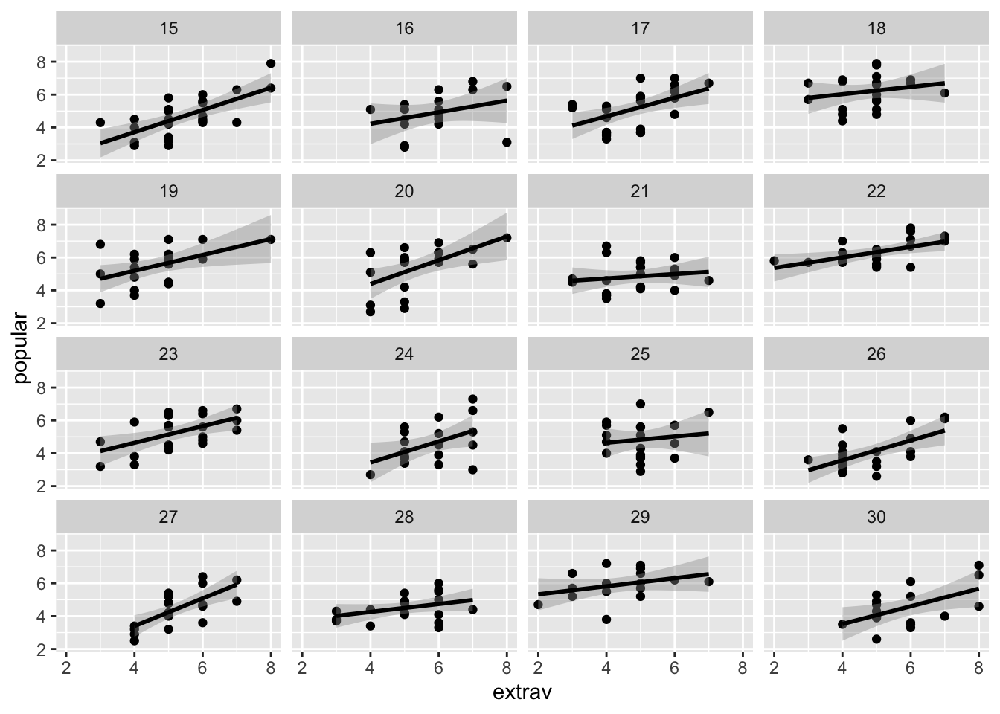

Chapter 16 All the data: Several correlations
We can view the correlations between all three variables using the apaTables packages.
##
##
## Means, standard deviations, and correlations with confidence intervals
##
##
## Variable M SD 1 2
## 1. class 50.37 29.08
##
## 2. extrav 5.21 1.26 .02
## [-.02, .06]
##
## 3. popular 5.08 1.38 .03 .32**
## [-.01, .08] [.28, .35]
##
## 4. texp 14.26 6.55 .07** -.39**
## [.03, .12] [-.42, -.35]
##
## 3
##
##
##
##
##
##
##
##
## .29**
## [.25, .33]
##
##
## Note. M and SD are used to represent mean and standard deviation, respectively.
## Values in square brackets indicate the 95% confidence interval.
## The confidence interval is a plausible range of population correlations
## that could have caused the sample correlation (Cumming, 2014).
## * indicates p < .05. ** indicates p < .01.
## Before interpreting a correlation, it is important to view the scatter plot. You can obtain a scatter plot for all possible correlations in analytic_data (i.e., every correlation in the table above) using the pairs.panels command from the psych package. Note we do not use the the library command for the psych package we use psych:: as per below. This creates the desired plot. The argument lm = TRUE ensures we also get a regression line on these plots.

16.1 Subgroup Analyses
16.1.1 Single subgroup
We want to obtain a correlation between extraversion and popularity for just the students in class 5. To do so, we use the filter command from the tidyverse package.
As you can see with the print command we now have just class 5 in the data set my_data.class.is.5.
To obtain the correlation for class 5:
##
## Pearson's product-moment correlation
##
## data: analytic_data_class_is_5$extrav and analytic_data_class_is_5$popular
## t = 3.6, df = 19, p-value = 0.002
## alternative hypothesis: true correlation is not equal to 0
## 95 percent confidence interval:
## 0.2899 0.8403
## sample estimates:
## cor
## 0.641316.1.2 Multiple subgroups
16.1.3 Background
Before we can calculate correlation for subgroups we need to know how R stores/handles information
This next bit is about how R works - not how you would typically run the analysis. Going into detail about how R works will help you to understand what we do later in this exercise when we encounter subgroups. With R, you can store the result of any analysis in a variable. In this case, you can store the correlation information in a variable we will call my_cor_result.
If you type my_cor_result you get all the information:
##
## Pearson's product-moment correlation
##
## data: analytic_data$extrav and analytic_data$popular
## t = 15, df = 1998, p-value <2e-16
## alternative hypothesis: true correlation is not equal to 0
## 95 percent confidence interval:
## 0.2758 0.3547
## sample estimates:
## cor
## 0.3158But you can see the structure of the resulting information with the str() function.
## List of 9
## $ statistic : Named num 14.9
## ..- attr(*, "names")= chr "t"
## $ parameter : Named int 1998
## ..- attr(*, "names")= chr "df"
## $ p.value : num 1.48e-47
## $ estimate : Named num 0.316
## ..- attr(*, "names")= chr "cor"
## $ null.value : Named num 0
## ..- attr(*, "names")= chr "correlation"
## $ alternative: chr "two.sided"
## $ method : chr "Pearson's product-moment correlation"
## $ data.name : chr "analytic_data$extrav and analytic_data$popular"
## $ conf.int : num [1:2] 0.276 0.355
## ..- attr(*, "conf.level")= num 0.95
## - attr(*, "class")= chr "htest"From the above information you can see the correlation value is stored under the label estimate. Therefore, you can get just the correlation by typing the following:
## cor
## 0.3158You can use this information to access just the correlation in a later section when we deal with subgroup analyses.
16.1.4 Implementation
If you’re interested in getting a correlation for 100 classes, there is any easy way to do so. We begin by using the group_by command from the tidyverse package.
Then you calculate the correlation for each group:
cor_by_group <- summarise(analytic_data_grouped_by_class,
cor_for_class = cor.test(x = extrav,
y = popular)$estimate)## `summarise()` ungrouping output (override with `.groups` argument)You can then print the correlation for the first few groups with the print command. Notice that the result for class 5 (i.e., r = .64) is the same as when we did analyses specifically for group 5 in the previous section.
## # A tibble: 100 x 2
## class cor_for_class
## <dbl> <dbl>
## 1 1 0.515
## 2 2 0.656
## 3 3 0.576
## 4 4 0.519
## 5 5 0.641
## 6 6 0.647
## 7 7 0.231
## 8 8 0.700
## 9 9 0.623
## 10 10 0.278
## # … with 90 more rowsYou can print all the rows with:
As previously noted, it’s a good idea to inspect the scatter plot for each correlation you calculate. In this case, that means you want a plot of the correlation for each group. To do so, we get the subset of the groups you want (e.g., just groups 15 to 30) using the filter command from the tidyverse package. This command creates a new data set with just the desired groups. In the example below we create a data set that contains just groups 15 to 30.
The scatter plot for those 15 groups is generated by using the ggplot2 package with the commands below. Don’t forget to install the tidyverse package (which contains ggplot2) if you haven’t used it before.
library(tidyverse)
my_scatter <- ggplot(data = analytic_data_groups_15_to_30,
mapping = aes(x = extrav, y = popular)) +
geom_point() +
facet_wrap(~class)
print(my_scatter)
You can easily add the regression line for these groups. Notice how the regression line does not extend beyond the data points. This is ideal behavior for the software because regression predictions are not valid beyond the range of the data.
library(tidyverse)
my_scatter <- ggplot(data = analytic_data_groups_15_to_30,
mapping = aes(x = extrav, y = popular)) +
geom_point() +
geom_smooth(method = "lm",
se = FALSE,
color = "black") +
facet_wrap(~class)
print(my_scatter)## `geom_smooth()` using formula 'y ~ x'
Now change the geom_smooth command so se = TRUE. Notice the confidence intervals are on the regression lines.
library(tidyverse)
my_scatter <- ggplot(data = analytic_data_groups_15_to_30,
mapping = aes(x = extrav, y = popular)) +
geom_point() +
geom_smooth(method = "lm",
se = TRUE,
color = "black") +
facet_wrap(~class)
print(my_scatter)## `geom_smooth()` using formula 'y ~ x'
Any ggplot2 graph can be saved (in the project folder) with the ggsave command. In the command below you save it as a PDF that is 6 inches wide and 6 inches tall. By changing the extension you can save it as several other file types: eps/ps, tex (pictex), pdf, jpeg, tiff, png, bmp, svg and wmf.
16.2 Comparing correlations
The part of the exercise involves comparing correlations within and across studies.
## Rows: 2,800
## Columns: 28
## $ a1 <int> 2, 2, 5, 4, 2, 6, 2, 4, 4, 2, 4, 2, 5, …
## $ a2 <int> 4, 4, 4, 4, 3, 6, 5, 3, 3, 5, 4, 5, 5, …
## $ a3 <int> 3, 5, 5, 6, 3, 5, 5, 1, 6, 6, 5, 5, 5, …
## $ a4 <int> 4, 2, 4, 5, 4, 6, 3, 5, 3, 6, 6, 5, 6, …
## $ a5 <int> 4, 5, 4, 5, 5, 5, 5, 1, 3, 5, 5, 5, 4, …
## $ c1 <int> 2, 5, 4, 4, 4, 6, 5, 3, 6, 6, 4, 5, 5, …
## $ c2 <int> 3, 4, 5, 4, 4, 6, 4, 2, 6, 5, 3, 4, 4, …
## $ c3 <int> 3, 4, 4, 3, 5, 6, 4, 4, 3, 6, 5, 5, 3, …
## $ c4 <int> 4, 3, 2, 5, 3, 1, 2, 2, 4, 2, 3, 4, 2, …
## $ c5 <int> 4, 4, 5, 5, 2, 3, 3, 4, 5, 1, 2, 5, 2, …
## $ e1 <int> 3, 1, 2, 5, 2, 2, 4, 3, 5, 2, 1, 3, 3, …
## $ e2 <int> 3, 1, 4, 3, 2, 1, 3, 6, 3, 2, 3, 3, 3, …
## $ e3 <int> 3, 6, 4, 4, 5, 6, 4, 4, NA, 4, 2, 4, 3,…
## $ e4 <int> 4, 4, 4, 4, 4, 5, 5, 2, 4, 5, 5, 5, 2, …
## $ e5 <int> 4, 3, 5, 4, 5, 6, 5, 1, 3, 5, 4, 4, 4, …
## $ n1 <int> 3, 3, 4, 2, 2, 3, 1, 6, 5, 5, 3, 4, 1, …
## $ n2 <int> 4, 3, 5, 5, 3, 5, 2, 3, 5, 5, 3, 5, 2, …
## $ n3 <int> 2, 3, 4, 2, 4, 2, 2, 2, 2, 5, 4, 3, 2, …
## $ n4 <int> 2, 5, 2, 4, 4, 2, 1, 6, 3, 2, 2, 2, 2, …
## $ n5 <int> 3, 5, 3, 1, 3, 3, 1, 4, 3, 4, 3, NA, 2,…
## $ o1 <int> 3, 4, 4, 3, 3, 4, 5, 3, 6, 5, 5, 4, 4, …
## $ o2 <int> 6, 2, 2, 3, 3, 3, 2, 2, 6, 1, 3, 6, 2, …
## $ o3 <int> 3, 4, 5, 4, 4, 5, 5, 4, 6, 5, 5, 4, 4, …
## $ o4 <int> 4, 3, 5, 3, 3, 6, 6, 5, 6, 5, 6, 5, 5, …
## $ o5 <int> 3, 3, 2, 5, 3, 1, 1, 3, 1, 2, 3, 4, 2, …
## $ gender <int> 1, 2, 2, 2, 1, 2, 1, 1, 1, 2, 1, 1, 2, …
## $ education <int> NA, NA, NA, NA, NA, 3, NA, 2, 1, NA, 1,…
## $ age <int> 16, 18, 17, 17, 17, 21, 18, 19, 19, 17,…## Rows: 2,800
## Columns: 6
## $ a1 <int> 2, 2, 5, 4, 2, 6, 2, 4, 4, 2, 4, 2, 5, 5, …
## $ c1 <int> 2, 5, 4, 4, 4, 6, 5, 3, 6, 6, 4, 5, 5, 4, …
## $ e1 <int> 3, 1, 2, 5, 2, 2, 4, 3, 5, 2, 1, 3, 3, 2, …
## $ o1 <int> 3, 4, 4, 3, 3, 4, 5, 3, 6, 5, 5, 4, 4, 5, …
## $ n1 <int> 3, 3, 4, 2, 2, 3, 1, 6, 5, 5, 3, 4, 1, 1, …
## $ gender <int> 1, 2, 2, 2, 1, 2, 1, 1, 1, 2, 1, 1, 2, 1, …Quickly see a condensed correlation matrix using the cor() command. You can specify use = “pairwise.complete.obs” for pairwise correlation - the documentation covers other options. The round(2) command rounds the correlations to two decimal places.
## a1 c1 e1 o1 n1 gender
## a1 1.00 0.03 0.11 0.01 0.17 -0.16
## c1 0.03 1.00 -0.02 0.17 -0.07 0.01
## e1 0.11 -0.02 1.00 -0.10 0.02 -0.13
## o1 0.01 0.17 -0.10 1.00 -0.05 -0.10
## n1 0.17 -0.07 0.02 -0.05 1.00 0.04
## gender -0.16 0.01 -0.13 -0.10 0.04 1.00Or you could use apaTable apa.cor.table() command:
##
##
## Means, standard deviations, and correlations with confidence intervals
##
##
## Variable M SD 1 2
## 1. a1 2.41 1.41
##
## 2. c1 4.50 1.24 .03
## [-.01, .07]
##
## 3. e1 2.97 1.63 .11** -.02
## [.07, .14] [-.06, .01]
##
## 4. o1 4.82 1.13 .01 .17**
## [-.02, .05] [.13, .20]
##
## 5. n1 2.93 1.57 .17** -.07**
## [.13, .20] [-.10, -.03]
##
## 6. gender 1.67 0.47 -.16** .01
## [-.19, -.12] [-.02, .05]
##
## 3 4 5
##
##
##
##
##
##
##
##
## -.10**
## [-.14, -.06]
##
## .02 -.05**
## [-.02, .05] [-.09, -.01]
##
## -.13** -.10** .04*
## [-.16, -.09] [-.14, -.07] [.01, .08]
##
##
## Note. M and SD are used to represent mean and standard deviation, respectively.
## Values in square brackets indicate the 95% confidence interval.
## The confidence interval is a plausible range of population correlations
## that could have caused the sample correlation (Cumming, 2014).
## * indicates p < .05. ** indicates p < .01.
## If you do this on your own computer you will see that the correlation between a1 and c1 with rounding is r = .03. Likewise, the correlation between e1 and o1 with rounding is r = -.10.
16.3 Comparing correlations within a data set
16.3.1 Non-overlapping correlations
We will compare the correlation to between (a1, c1) to the correlation between (e1, o1) with cocor. In this case, because neither of the variables in the first correlation (a1, c1) are in the second correlation (e1, o1) we refer to this as a non-overlapping correlation comparison.
The cocor command will provide a lot of output. We are most interested in the last part of the output corresponding to Zou (2007). But we also want to examine the first part of the output which will show us the two original correlations (a1, c1) = 0.0276, and (e1, o1) = -0.1002. As well it also shows us the difference between them, Difference: r.jk - r.hm = 0.1278.
##
## Results of a comparison of two nonoverlapping correlations based on dependent groups
##
## Comparison between r.jk (a1, c1) = 0.0276 and r.hm (e1, o1) = -0.1002
## Difference: r.jk - r.hm = 0.1278
## Related correlations: r.jh = 0.1036, r.jm = 0.0125, r.kh = -0.0259, r.km = 0.1688
## Data: as.data.frame(bfi): j = a1, k = c1, h = e1, m = o1
## Group size: n = 2724
## Null hypothesis: r.jk is equal to r.hm
## Alternative hypothesis: r.jk is not equal to r.hm (two-sided)
## Alpha: 0.05
##
## pearson1898: Pearson and Filon's z (1898)
## z = 4.7832, p-value = 0.0000
## Null hypothesis rejected
##
## dunn1969: Dunn and Clark's z (1969)
## z = 4.7676, p-value = 0.0000
## Null hypothesis rejected
##
## steiger1980: Steiger's (1980) modification of Dunn and Clark's z (1969) using average correlations
## z = 4.7671, p-value = 0.0000
## Null hypothesis rejected
##
## raghunathan1996: Raghunathan, Rosenthal, and Rubin's (1996) modification of Pearson and Filon's z (1898)
## z = 4.7676, p-value = 0.0000
## Null hypothesis rejected
##
## silver2004: Silver, Hittner, and May's (2004) modification of Dunn and Clark's z (1969) using a backtransformed average Fisher's (1921) Z procedure
## z = 4.7671, p-value = 0.0000
## Null hypothesis rejected
##
## zou2007: Zou's (2007) confidence interval
## 95% confidence interval for r.jk - r.hm: 0.0753 0.1800
## Null hypothesis rejected (Interval does not include 0)We could write this as \(\Delta\)r = .13, 95% CI [.07, .18]. We could also add the p-value from silver2004. In this case we would write this as \(\Delta\)r = .13, 95% CI [.07, .18], p < .001.
16.3.2 Overlapping correlations
We will compare the correlation to between (a1, c1) to the correlation between (a1, e1) with cocor. In this case, because A1 is common to the first correlation (a1, c1) and the second correlation (e1, o1) we refer to this as an overlapping correlation comparison.
The cocor command will provide a lot of output. We are most interested in the last part of the output corresponding to Zou (2007). But we also want to examine the first part of the output which will show us the two original correlations (a1, c1) = 0.0276, and (a1, e1) = 0.10472 As well it also shows us the difference between them, Difference: r.jk - r.jh = -0.0784 (with rounding, -.08).
Look in the APA correlation table above to confirm the correlations that are being compared (.0276 (i.e., .03) and .10472 (i.e., .10)).
##
## Results of a comparison of two overlapping correlations based on dependent groups
##
## Comparison between r.jk (a1, c1) = 0.0263 and r.jh (a1, e1) = 0.1047
## Difference: r.jk - r.jh = -0.0784
## Related correlation: r.kh = -0.0248
## Data: as.data.frame(bfi): j = a1, k = c1, h = e1
## Group size: n = 2741
## Null hypothesis: r.jk is equal to r.jh
## Alternative hypothesis: r.jk is not equal to r.jh (two-sided)
## Alpha: 0.05
##
## pearson1898: Pearson and Filon's z (1898)
## z = -2.8820, p-value = 0.0040
## Null hypothesis rejected
##
## hotelling1940: Hotelling's t (1940)
## t = -2.8827, df = 2738, p-value = 0.0040
## Null hypothesis rejected
##
## williams1959: Williams' t (1959)
## t = -2.8793, df = 2738, p-value = 0.0040
## Null hypothesis rejected
##
## olkin1967: Olkin's z (1967)
## z = -2.8820, p-value = 0.0040
## Null hypothesis rejected
##
## dunn1969: Dunn and Clark's z (1969)
## z = -2.8775, p-value = 0.0040
## Null hypothesis rejected
##
## hendrickson1970: Hendrickson, Stanley, and Hills' (1970) modification of Williams' t (1959)
## t = -2.8827, df = 2738, p-value = 0.0040
## Null hypothesis rejected
##
## steiger1980: Steiger's (1980) modification of Dunn and Clark's z (1969) using average correlations
## z = -2.8765, p-value = 0.0040
## Null hypothesis rejected
##
## meng1992: Meng, Rosenthal, and Rubin's z (1992)
## z = -2.8754, p-value = 0.0040
## Null hypothesis rejected
## 95% confidence interval for r.jk - r.jh: -0.1325 -0.0251
## Null hypothesis rejected (Interval does not include 0)
##
## hittner2003: Hittner, May, and Silver's (2003) modification of Dunn and Clark's z (1969) using a backtransformed average Fisher's (1921) Z procedure
## z = -2.8765, p-value = 0.0040
## Null hypothesis rejected
##
## zou2007: Zou's (2007) confidence interval
## 95% confidence interval for r.jk - r.jh: -0.1317 -0.0250
## Null hypothesis rejected (Interval does not include 0)We could write this as \(\Delta\)r = -.08, 95% CI [-.13, -.03]. If we include the p-value from hittner2003 it becomes:
\(\Delta\)r = -.08, 95% CI [-.13, -.03], p = .004.
16.4 Comparing correlations between data sets
16.5 Create seperate data files for men and women (if needed)
16.6 Check out the subgroup columns
Use glimpse to check out the subgroups. Note that it also tells you the number of participants in each subgroup.
## Rows: 919
## Columns: 5
## $ a1 <int> 2, 2, 2, 4, 4, 4, 2, 5, 4, 4, 5, 5, 1, 4, 1, 4…
## $ c1 <int> 2, 4, 5, 3, 6, 4, 5, 4, 5, 5, 5, 4, 4, 5, 1, 4…
## $ e1 <int> 3, 2, 4, 3, 5, 1, 3, 2, 3, 1, 2, 3, 2, 3, 6, 2…
## $ o1 <int> 3, 3, 5, 3, 6, 5, 4, 5, 5, 6, 5, 6, 6, 6, 6, 4…
## $ n1 <int> 3, 2, 1, 6, 5, 3, 4, 1, 2, 4, 6, 1, 2, 2, 1, N…## Rows: 1,881
## Columns: 5
## $ a1 <int> 2, 5, 4, 6, 2, 5, 4, 4, 4, 1, 2, 1, 2, 2, 2, 4…
## $ c1 <int> 5, 4, 4, 6, 6, 5, 4, 5, 1, 5, 3, 5, 6, 4, 5, 5…
## $ e1 <int> 1, 2, 5, 2, 2, 3, 1, 1, 1, 1, 2, 1, 2, 1, 1, 1…
## $ o1 <int> 4, 4, 3, 4, 5, 4, 5, 4, 4, 5, 6, 6, 5, 6, 2, 4…
## $ n1 <int> 3, 4, 2, 3, 5, 1, 4, 5, 5, 2, 4, 2, 3, 4, 1, 5…16.7 Check out the subgroup correlations
16.7.1 Correlations for men
Check out the correlation between a1 and e1 for men in the table created
##
##
## Means, standard deviations, and correlations with confidence intervals
##
##
## Variable M SD 1 2 3
## 1. a1 2.73 1.43
##
## 2. c1 4.48 1.24 .02
## [-.05, .08]
##
## 3. e1 3.27 1.66 .14** .01
## [.07, .20] [-.06, .07]
##
## 4. o1 4.98 1.08 -.02 .18** -.11**
## [-.09, .04] [.11, .24] [-.18, -.05]
##
## 5. n1 2.83 1.56 .17** -.07* .05
## [.10, .23] [-.13, -.00] [-.02, .11]
##
## 4
##
##
##
##
##
##
##
##
##
##
##
## -.05
## [-.12, .01]
##
##
## Note. M and SD are used to represent mean and standard deviation, respectively.
## Values in square brackets indicate the 95% confidence interval.
## The confidence interval is a plausible range of population correlations
## that could have caused the sample correlation (Cumming, 2014).
## * indicates p < .05. ** indicates p < .01.
## 16.7.2 Correlations for women
Check out the correlation between a1 and e1 for women in the table created
##
##
## Means, standard deviations, and correlations with confidence intervals
##
##
## Variable M SD 1 2 3
## 1. a1 2.26 1.37
##
## 2. c1 4.52 1.24 .04
## [-.01, .08]
##
## 3. e1 2.83 1.60 .06** -.04
## [.02, .11] [-.08, .01]
##
## 4. o1 4.73 1.14 .00 .17** -.12**
## [-.04, .05] [.12, .21] [-.16, -.07]
##
## 5. n1 2.98 1.57 .18** -.07** .01
## [.13, .22] [-.11, -.02] [-.03, .06]
##
## 4
##
##
##
##
##
##
##
##
##
##
##
## -.04
## [-.09, .00]
##
##
## Note. M and SD are used to represent mean and standard deviation, respectively.
## Values in square brackets indicate the 95% confidence interval.
## The confidence interval is a plausible range of population correlations
## that could have caused the sample correlation (Cumming, 2014).
## * indicates p < .05. ** indicates p < .01.
## 16.8 Actual comparison of (a1, e1) correlation for men to the (a1, e1) correlation for women
As per the correlations tables above we find the correlations for men ((a1, e1) = 0.1387) and women ((a1, e1) = 0.1387) in the output. We also see the comparison: Difference: r1.jk - r2.hm = 0.0765. Looking below we see the zou2007 confidence interval.
library(cocor)
bfi_men_dataframe <- as.data.frame(bfi_men)
bfi_women_dataframe <- as.data.frame(bfi_women)
cocor( ~ a1 + e1 | a1 + e1,
data = list(bfi_men_dataframe, bfi_women_dataframe))##
## Results of a comparison of two correlations based on independent groups
##
## Comparison between r1.jk (a1, e1) = 0.1387 and r2.hm (a1, e1) = 0.0623
## Difference: r1.jk - r2.hm = 0.0765
## Data: list(bfi_men_dataframe, bfi_women_dataframe): j = a1, k = e1, h = a1, m = e1
## Group sizes: n1 = 912, n2 = 1849
## Null hypothesis: r1.jk is equal to r2.hm
## Alternative hypothesis: r1.jk is not equal to r2.hm (two-sided)
## Alpha: 0.05
##
## fisher1925: Fisher's z (1925)
## z = 1.9074, p-value = 0.0565
## Null hypothesis retained
##
## zou2007: Zou's (2007) confidence interval
## 95% confidence interval for r1.jk - r2.hm: -0.0021 0.1543
## Null hypothesis retained (Interval includes 0)We could write this as \(\Delta\)r = .08, 95% CI [-.002, .15]. If we include the p-value from fisher1925. We would write:
\(\Delta\)r = .08, 95% CI [-.002, .15], p = .057.